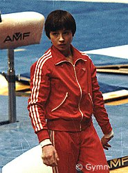

Albina Shishova (USSR)
1983 European AA Bronze Medalist

|
Medal Total
|
Albina was born on October 17, 1966 in Zaporozhie. She was coached by Vladislav Rastorotsky at Dynamo Rostov. Her teammate, training partner and best friend was Natalia Yurchenko. Visit her website for photos, past and present.